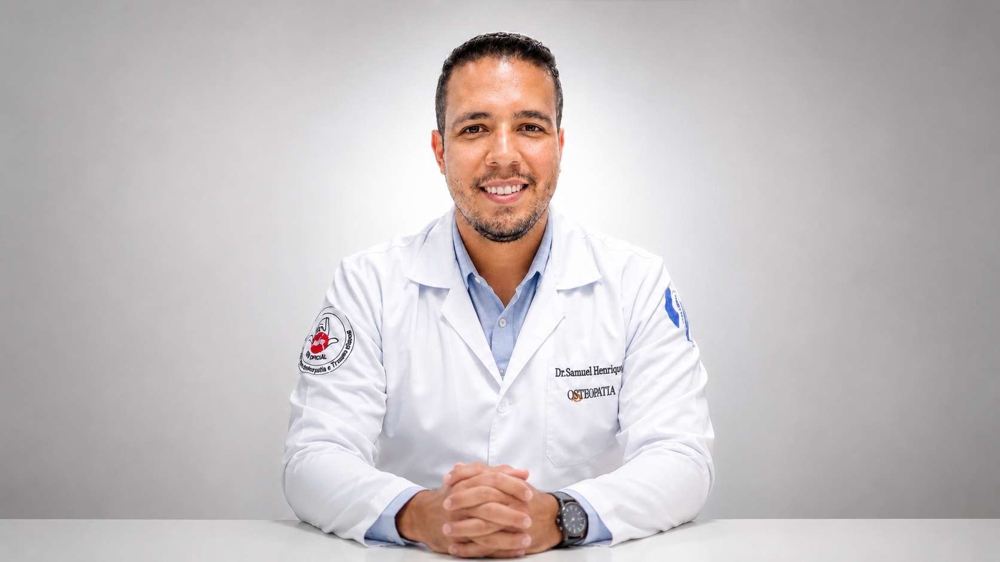
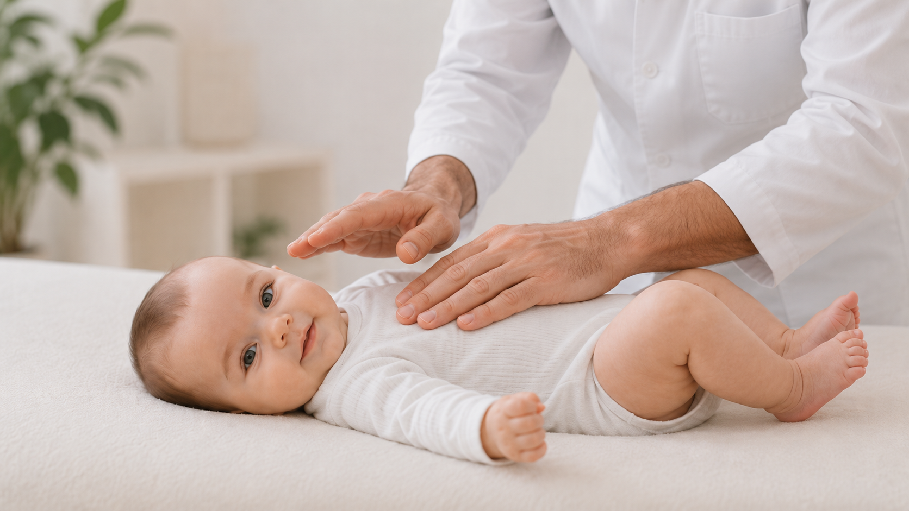
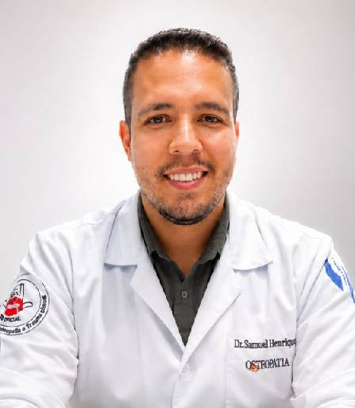
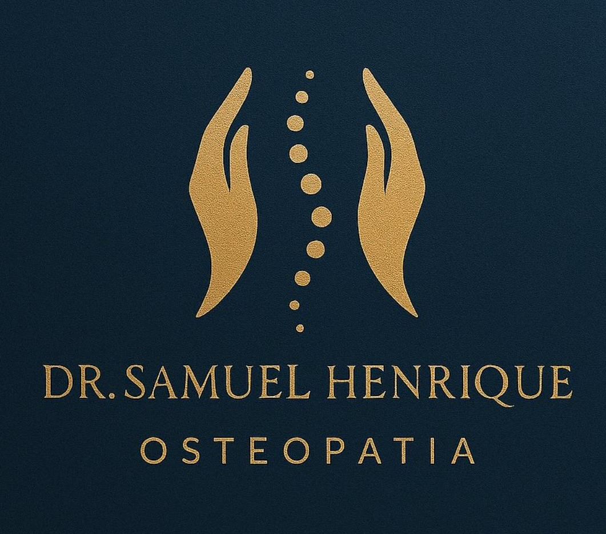

Dor lombar, cervical e ciática
Queixas de coluna, rigidez, irradiação, tensão e limitação de movimento que afetam sono, trabalho e rotina.
Atendimento individual com avaliação global para dores persistentes, coluna, mobilidade, compensações e queixas que não se resolvem apenas com tratamentos locais.

A dor é investigada como parte de uma história: movimento, rotina, compensações, tecidos e sistema nervoso.
Antes de escolher qualquer técnica, o atendimento busca entender como sua dor começou, o que mantém a queixa, quais regiões estão compensando e como o corpo responde ao movimento, ao toque e à rotina.
Essa leitura global ajuda a construir uma conduta mais precisa, menos automática e mais conectada com o que o paciente realmente apresenta.
Queixas de coluna, rigidez, irradiação, tensão e limitação de movimento que afetam sono, trabalho e rotina.
Quando a dor melhora e volta, a investigação precisa ir além do ponto dolorido e observar compensações, histórico e função.
Restrições e adaptações corporais podem sobrecarregar regiões distantes da causa inicial.
Atendimento com formação específica para bebês e crianças, respeitando idade, desenvolvimento e segurança.
Avaliação funcional para organizar movimento, retorno às atividades e evolução clínica com acompanhamento.
Técnicas manuais leves e específicas ajudam a avaliar tensões e restrições que podem influenciar sono, amamentação, digestão, postura e desenvolvimento motor.
Dificuldade na pega, cólicas, refluxo persistente, choro excessivo, torcicolo, assimetria craniana, atraso motor e alterações posturais.
Em bebês, o tratamento é delicado, indolor e adaptado à idade, respeitando desenvolvimento, conforto e segurança.

O bebê é avaliado em crânio, coluna, caixa torácica, abdome e articulações para encontrar restrições de mobilidade.
A abordagem deve ser feita por profissional qualificado e, quando necessário, integrada ao acompanhamento do pediatra.
O tratamento não segue uma sequência pronta de manobras. A conduta nasce da escuta, da avaliação manual e da resposta individual de cada paciente.
O primeiro passo é entender sua queixa, histórico, rotina, exames, tratamentos anteriores e objetivos.
Mobilidade, tecidos, postura, respiração, sistema nervoso e possíveis compensações são avaliados em conjunto.
A intervenção é direcionada pelo raciocínio clínico, buscando melhorar função, mobilidade e resposta do corpo.
O paciente recebe orientações claras sobre evolução, retorno e sinais importantes para acompanhar.

Dr. Samuel Henrique é fisioterapeuta, osteopata e professor universitário. Sua trajetória reúne atuação clínica em reabilitação, ortopedia, neurologia adulta e pediátrica, além de formação completa em Osteopatia.
A proposta do atendimento é unir raciocínio clínico, toque terapêutico e comunicação clara, para que o paciente entenda o que está sendo avaliado e por que determinada conduta faz sentido.

Mais do que aplicar técnicas, a consulta organiza informações: onde dói, por que pode estar doendo, o que será feito e quais próximos passos fazem sentido.
Quando começou, como evoluiu, o que piora, o que melhora e o que já foi tentado.
Movimento, restrições, compensações e respostas são avaliados em conjunto.
O tratamento é definido de acordo com a hipótese clínica construída na consulta.
A melhora é acompanhada por função, mobilidade, recorrência e segurança.
Pacientes relatam atenção, segurança no atendimento, explicação clara e melhora em queixas persistentes.
Ver avaliações no Google“Super atencioso. Me atendeu de urgência e, meses depois, graças a ele, não tive mais dor.”
“Excelente profissional. Eu estava em crise do nervo ciático devido à hérnia de disco.”
“Ótimo profissional, com experiência. Ajudou muito o bebê que estava com torcicolo.”
Consultório localizado na Zona 4. O contato principal é feito pelo WhatsApp comercial para organizar horários, disponibilidade e próximos passos.
Não. A osteopatia avalia o corpo como um sistema, considerando mobilidade, tecidos, vísceras, sistema nervoso e compensações.
Pode ser indicado para dores recorrentes ou persistentes, especialmente quando a queixa retorna mesmo após tratamentos locais.
Sim. O Dr. Samuel possui formação em Osteopatia Pediátrica e realiza atendimento respeitando idade, desenvolvimento e segurança.
O atendimento informado é particular. Para confirmar valores, horários e condições, o ideal é entrar em contato pelo WhatsApp comercial.
Preencha os dados e o site abrirá uma mensagem organizada no WhatsApp. O envio não substitui avaliação clínica presencial.